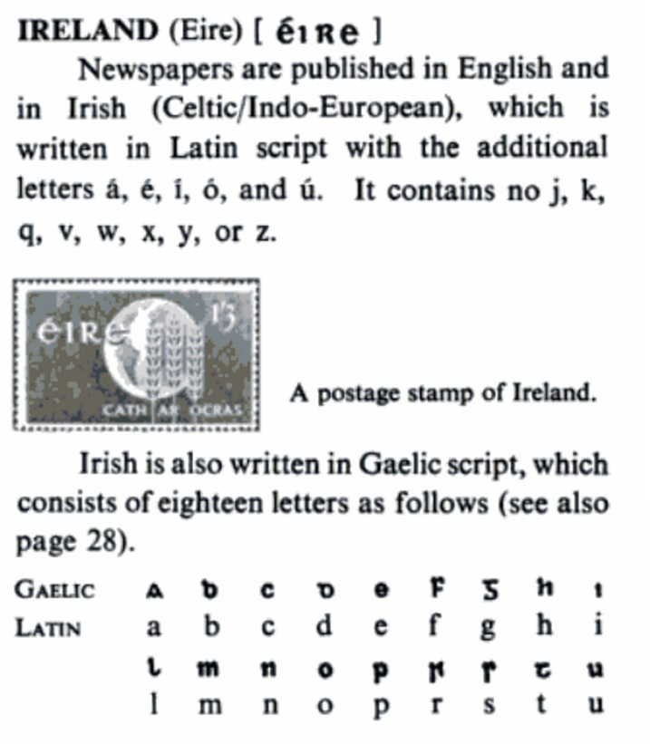
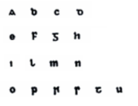
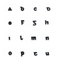

18 letters alphabets

If they were dice, were they 15 letters alphabets before (when there were only vowel, labial, lingual per five lines, were there an empty slot on every die?)
First, we can see prs are of one claster actually. I knew pqr were a claster, but s I didn't expect.
 I also knew QR were stroked OP
Пятнашки (пятнышки? см azilian pebbles) once were banned (probably because 15 in tarot is for Devil – see, previous culture is Devil to Christians)
I really read it, but wicky sais Игра в 15[1][2], пятнашки[3][4], такен[2][4][5] — популярная головоломка, придуманная в 1878 году Ноем Чепмэном. is it possible he was a one who got patent, but the game is of ancient origin? is it newed history to hide the real culture of the past? Or was church that opressive in the beginning of the 20th century? Suddenly I realized I heard it's not good to play them from my grandma of 1913.